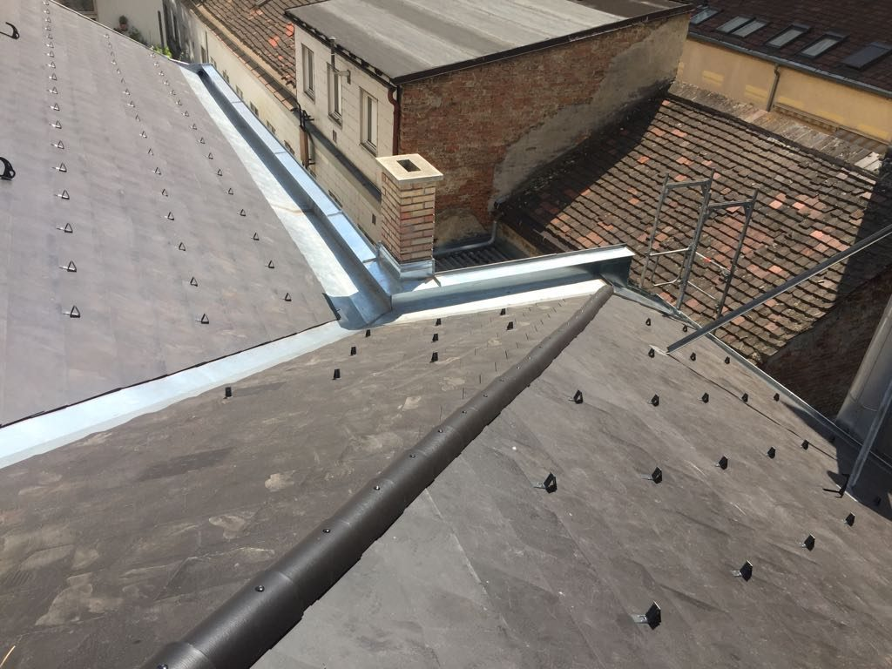
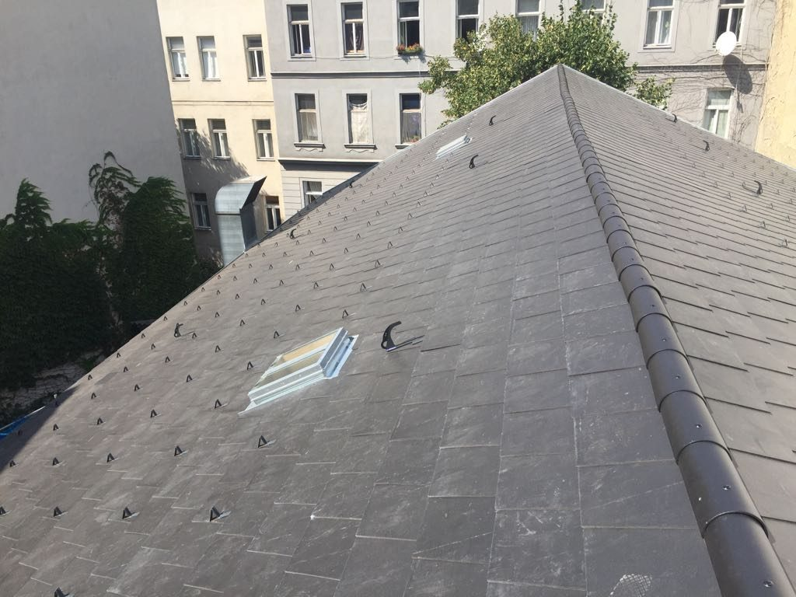
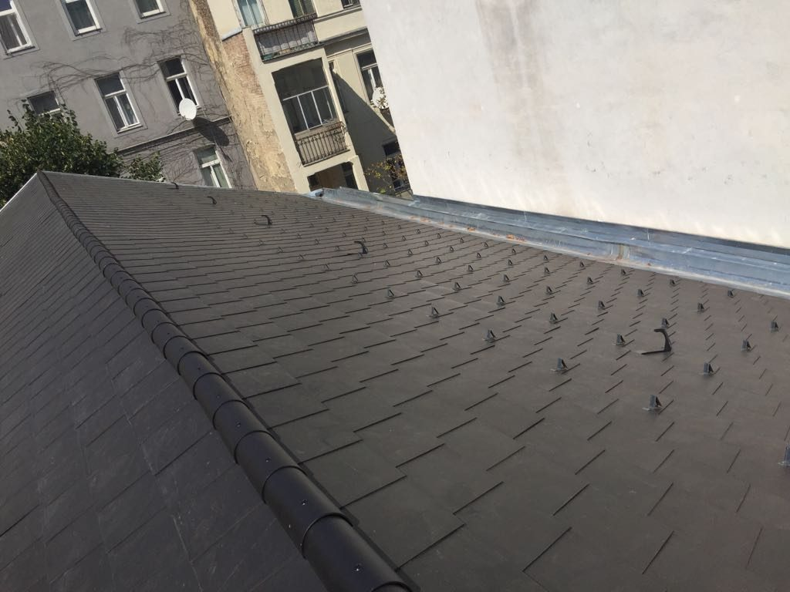
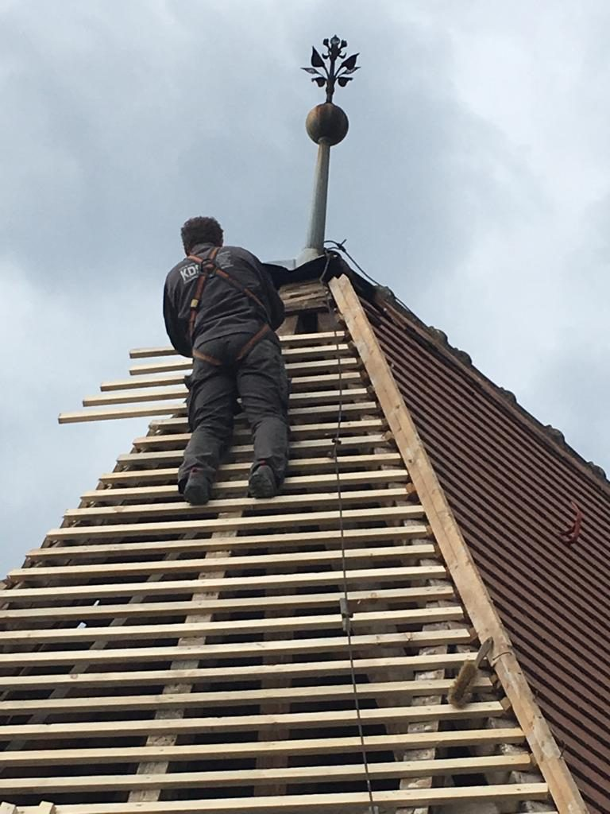

Referenzen
Arbeiten,
die bleiben
Der Betrieb arbeitet seit 1868 in Wien und Umgebung – für Hausverwaltungen, Architekten und Privatkunden. Die folgenden Aufnahmen stammen aus dem Bildbestand des Betriebs und zeigen die vier Gewerke in der Ausführung.
Dachdeckerarbeiten
Neueindeckung, Reparatur und Blechanstrich am Wiener Steildach.






Spengler, Terrasse & Flachdach
Bauspenglerarbeiten im Dachbereich, Terrassen- und Balkonsanierung sowie Flachdachsanierung in Warm- oder Umkehrdachaufbau.


Hinweis zur Vorschau: Zu den Aufnahmen liegen in der bestehenden Website keine Projektangaben vor. Im Live-Betrieb ergänzen wir jede Referenz um Objekt, Bezirk, Leistungsumfang, Ausführungsjahr und Auftraggeberart (Hausverwaltung, Architekt, Privat) – die Grundlage für eine durchsuchbare Projektgalerie.
Was unsere Kunden vorfinden
Unser Tätigkeitsbereich dehnt sich über ganz Wien und Umgebung aus und richtet sich von Hausverwaltungen und Architekten bis zu Privatkunden. Durch die langjährige Erfahrung und laufende Weiterbildung unserer Mitarbeiter ist die Qualität der Arbeiten garantiert.
Wir arbeiten ausschließlich mit Stammpersonal, um unseren hohen Standard zu halten.